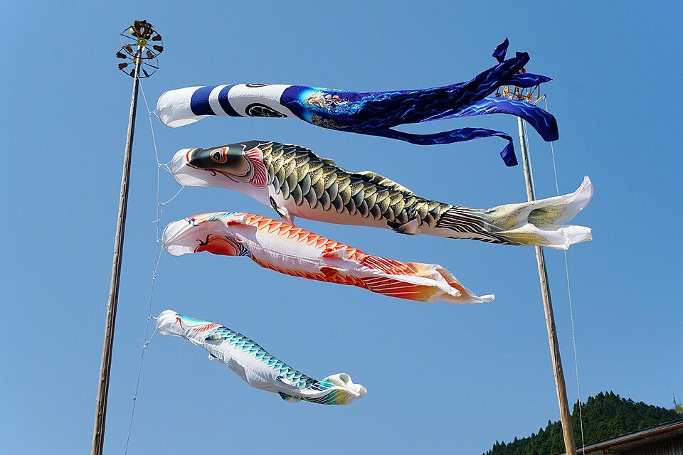

日本の祝日はどう決まる？ 振替休日と国民の休日の違い（2026・2027年の休日つき）
要点まとめ
カレンダーの休みの日には、「国民の祝日」のほかに、日曜日と重なった祝日の代わりの休み（振替休日）や、祝日にはさまれた休みが混じっています。この記事では、祝日がどう決まり、なぜその日が休みになるのかを、「国民の祝日に関する法律」（祝日法）の条文と、内閣府・国立天文台の資料でまとめました。最後に、2026年と2027年の祝日・休日の一覧も載せています。

祝日は法律で決まる：16の「国民の祝日」
祝日を決めているのは、「国民の祝日に関する法律」（昭和23年法律第178号）です[1]。内閣府は、この法律で年間に計16の日が「国民の祝日」とされ、それぞれの日の趣旨が定められていると説明しています[2]。
| 名称 | 日付 | 法律に書かれた意味（短くしたもの） | 祝日になった年 |
|---|---|---|---|
| 元日 | 1月1日 | 年のはじめを祝う | 1948年 |
| 成人の日 | 1月の第2月曜日 | おとなになったことを自覚し、生き抜こうとする青年を祝い励ます | 1948年 |
| 建国記念の日 | 政令で定める日（2月11日） | 建国をしのび、国を愛する心を養う | 1966年 |
| 天皇誕生日 | 2月23日 | 天皇の誕生日を祝う | 1948年 |
| 春分の日 | 春分日 | 自然をたたえ、生物をいつくしむ | 1948年 |
| 昭和の日 | 4月29日 | 復興を遂げた昭和の時代を顧み、国の将来に思いをいたす | 2007年 |
| 憲法記念日 | 5月3日 | 日本国憲法の施行を記念し、国の成長を期する | 1948年 |
| みどりの日 | 5月4日 | 自然に親しみ、その恩恵に感謝し、豊かな心をはぐくむ | 1989年 |
| こどもの日 | 5月5日 | こどもの人格を重んじ、幸福をはかるとともに、母に感謝する | 1948年 |
| 海の日 | 7月の第3月曜日 | 海の恩恵に感謝し、海洋国日本の繁栄を願う | 1996年 |
| 山の日 | 8月11日 | 山に親しむ機会を得て、山の恩恵に感謝する | 2016年 |
| 敬老の日 | 9月の第3月曜日 | 社会につくしてきた老人を敬愛し、長寿を祝う | 1966年 |
| 秋分の日 | 秋分日 | 祖先をうやまい、亡くなった人々をしのぶ | 1948年 |
| スポーツの日 | 10月の第2月曜日 | スポーツを楽しみ、他者を尊重する精神を培い、健康で活力ある社会を願う | 1966年（体育の日として） |
| 文化の日 | 11月3日 | 自由と平和を愛し、文化をすすめる | 1948年 |
| 勤労感謝の日 | 11月23日 | 勤労をたっとび、生産を祝い、国民がたがいに感謝しあう | 1948年 |
「祝日になった年」は、祝日に加える改正が施行された年です。天皇誕生日・みどりの日のように、あとで日付が変わったものもあります（「祝日の移り変わりと特例」の章）。法律の原文は「おとなになつた」「勤労をたつとび」のように、小さい「っ」を使わない書き方です[1]。
1948年、国会が法律で決めた
政府は政令で決める案をやめ、国会が法律を作った
内閣府によると、日本国憲法の施行後、政府は1947年12月に祝祭日を政令で改める案を国会に示しました。しかし国会側から、祝祭日は国民の生活・感情と密接なつながりがあるので「国会において決めることが適当」との意見が出され、政府はこの方針を撤回しました[3]。祝日法は1948年7月5日に成立し、7月20日に公布・施行されました[3]。
建国記念の日は「政令で定める日」
法律に日付がなく、政令で2月11日と決めている
1966年の改正で建国記念の日が加わったとき、日付は法律に書かず、政令で定めることになりました[5]。審議会の答申を受けて、政府は同じ年の12月に政令（昭和41年政令第376号）を定め、2月11日としました[5][6]。最初の建国記念の日は1967年2月11日です[7]。
振替休日や国民の休日は「祝日」ではない
法律上は「休日」で、16の祝日には数えない
祝日法第3条は、第1項で「国民の祝日」を休日とし、第2項と第3項で、祝日ではない日を休日にしています[1]。内閣府の一覧でも、これらの日の名前は「休日」で、「祝日法第3条第2項による休日」のように書かれています[2]。内閣府は第2項の休日を「いわゆる「振替休日」」と呼んでいます[2]。第3項の休日には法律上の名前がないため、この記事では「国民の休日」と呼びます。
日付が毎年変わる祝日
16の祝日のうち、成人の日・海の日・敬老の日・スポーツの日は「○月の第○月曜日」、春分の日・秋分の日は「春分日」「秋分日」と決められていて、年によって日付が変わります[1]。
| 祝日 | もとの日付 | いまの日付 | 変わった年 | 動く範囲 |
|---|---|---|---|---|
| 成人の日 | 1月15日 | 1月の第2月曜日 | 2000年 | 1月8〜14日 |
| スポーツの日（当時は体育の日） | 10月10日 | 10月の第2月曜日 | 2000年 | 10月8〜14日 |
| 海の日 | 7月20日 | 7月の第3月曜日 | 2003年 | 7月15〜21日 |
| 敬老の日 | 9月15日 | 9月の第3月曜日 | 2003年 | 9月15〜21日 |
変わった年は改正の施行の年。動く範囲は筆者の計算です（敬老の日の範囲は内閣府も同じ説明[2]）。
連休を増やすための「月曜日の祝日」
2000年と2003年の改正で、4つの祝日が月曜日に
1998年の改正（2000年1月1日施行）で成人の日と体育の日が第2月曜日に、2001年の改正（2003年1月1日施行）で海の日と敬老の日が第3月曜日になりました[8][9][1]。内閣府は、連休化により余暇活動を一層充実させ、ゆとりある国民生活の実現に資するための改正だったと説明しています[5]。内閣府の2018年の資料では、成人の日の変更を「いわゆる「ハッピーマンデー」」と書いています。法律の言葉ではありません[10]。
春分の日・秋分の日は、天文学で決まる
法律には「春分日」「秋分日」とだけ書かれている
祝日法は、春分の日を「春分日」、秋分の日を「秋分日」としていて、月日を書いていません[1][2]。国立天文台によると、春分日は、太陽が春分点を通過する瞬間（春分）を含む日のことです[4]。たとえば2027年の春分は3月21日5時25分（中央標準時）なので、春分の日は3月21日になります[11][12]。
春分の日・秋分の日は、次の流れで決まります。
- 毎年2月
国立天文台が、翌年の「暦要項」を発表する
2027年分は2026年2月2日に発表[12]
- 2月の官報
暦要項が官報に載り、正式に決まる
2月1日の官報。2月1日が行政機関の休日なら翌日以降[4]
- 2月
内閣府が、翌年の祝日の一覧を載せる
2028年分は2027年2月に掲載の予定[2]
振替休日：祝日が日曜日に当たったとき
振替休日と国民の休日は、どちらも祝日法第3条で決まっている「祝日ではない休み」です[1]。まず、2つの違いを2026年のカレンダーで見てみます。
日曜日に当たった祝日の「代わり」の休み
その後で最も近い「祝日でない日」が休みになる
祝日法第3条第2項は、「「国民の祝日」が日曜日に当たるときは、その日後においてその日に最も近い「国民の祝日」でない日を休日とする。」と定めています[1]。ふつうは翌日の月曜日ですが、5月3日から5日は祝日が続くので、このどれかが日曜日に当たると、5月6日が振替休日になります[14]。2026年は、5月3日（日）の憲法記念日に対して、5月6日（水）が休日になりました[2]。
1973年は「翌日」、2007年から「最も近い祝日でない日」
2007年から、翌日も祝日ならその先の日が休みに
第3条第2項で休みになる日
変更前：その翌日変更後：その日後においてその日に最も近い「国民の祝日」でない日
振替休日は、1973年4月12日に公布・施行された改正で、祝日法第3条に第2項として加わりました。当時の条文は「その翌日を休日とする」でした[15]。制定時の第3条は、「「国民の祝日」は、休日とする。」の1文だけでした[18]。内閣府の一覧では、1973年4月30日（月）が最初の「休日」です（4月29日の天皇誕生日が日曜日）[7]。政府広報オンラインは、振替休日の規定は、祝日と日曜日のどちらも、ふだんの勤務を離れた日として確保できるようにするためのものと説明しています[14]。
2005年の改正で、「翌日」が今の書き方に変わりました。同じ改正で、みどりの日が4月29日から5月4日に移り、4月29日は昭和の日になりました[17][16]。法案の提案理由は、振替休日について「調整」するとしています[19]。新しいルールで翌日でない日が休みになったのは、2008年5月6日（火）が初めてです（5月4日のみどりの日が日曜日で、5日もこどもの日）[20][7]。
土曜日の祝日には、振替休日はない
振替休日になるのは、祝日が日曜日に当たったときだけ
第3条第2項が定めているのは、祝日が「日曜日に当たるとき」だけです[1]。政府広報オンラインも、祝日が土曜日に当たる場合には振替休日はないと説明しています[14]。
国民の休日：祝日にはさまれた日
祝日法第3条第3項は、「その前日及び翌日が「国民の祝日」である日（「国民の祝日」でない日に限る。）は、休日とする。」と定めています[1]。内閣府は、前日と翌日の両方を祝日にはさまれた平日が休日になると説明しています[2]。
1985年、5月4日を休みにするために生まれた
憲法記念日とこどもの日の間を、連休にする条項
第3項は、1985年12月27日に公布・施行された改正で加わりました[22]。国立天文台は、この条項はもともと、憲法記念日とこどもの日に挟まれる5月4日を休日にして連休を作るために追加されたものと説明しています[20]。2007年からは5月4日そのものが「みどりの日」になりましたが、第3項はその後も残されました[5][20]。
いまは9月に、数年おきに現れる
敬老の日と秋分の日の間が1日だけの年に休みになる
月曜日の祝日ができた結果、2009年9月22日に、初めて5月4日以外でこの条項が使われました[20]。敬老の日は9月15〜21日のどれかの月曜日、秋分の日はふつう9月22日か23日なので、休みになるのは「敬老の日が20日で秋分の日が22日」か「敬老の日が21日で秋分の日が23日」の年に限られます[20]。内閣府も「数年に一度、不定期に現れる休日」としています[2]。
| 年 | 敬老の日 | 国民の休日 | 秋分の日 |
|---|---|---|---|
| 2009年 | 9月21日（月） | 9月22日（火） | 9月23日（水） |
| 2015年 | 9月21日（月） | 9月22日（火） | 9月23日（水） |
| 2026年 | 9月21日（月） | 9月22日（火） | 9月23日（水） |
| 2032年（見込み） | 9月20日（月） | 9月21日（火） | 9月22日（水） |
2009・2015・2026年は内閣府の一覧から[7]。2032年は、国立天文台の秋分日の予想をもとに筆者が計算した見込みで、確定ではありません[4]。
9月の連休は、必ず月曜日から水曜日
土日が休みなら、前の土日と合わせて5連休になる
国立天文台は、この9月の連休は、成立すれば必ず月〜水の連休になると説明しています[20]。2026年は、土日が休みの人なら9月19日（土）から23日（水）までの5連休でした[14][2]。政府広報オンラインは、祝日にはさまれた2026年9月22日を、いわゆる「オセロ休日」と紹介しています[14]。
次は2032年9月21日の見込み（確定ではない）
国立天文台の予想どおりなら、2032年に現れる
国立天文台が公開している予想では、2032年の秋分日は9月22日（水）です[4]。この予想どおりなら、9月20日（月）の敬老の日との間の9月21日（火）が国民の休日になります（筆者の計算）。国立天文台の「暦象年表2009」をもとにした記事も、秋分の日が予測どおりなら「2015年，2026年，2032年」と続くだろうと書いています[20]。ただし予想は「あくまで参考」とされ、正式に決まるのは前年2月の暦要項が官報に載ったときです[4]。
祝日の移り変わりと特例
- 1948年
祝日法ができる（祝日は9日）
7月20日に公布・施行[3]
- 1966年
建国記念の日・敬老の日・体育の日が加わる
建国記念の日は政令で2月11日に[5]
- 1973年
振替休日ができる（第3条第2項）
日曜日に当たった祝日の翌日を休日に[15]
- 1985年
国民の休日ができる（第3条第3項）
- 1989年
4月29日が「みどりの日」に、天皇誕生日は12月23日に
- 1996年
海の日（7月20日）ができる
- 2000年
成人の日・体育の日が第2月曜日に
- 2003年
海の日・敬老の日が第3月曜日に
- 2007年
昭和の日ができ、みどりの日は5月4日へ。振替休日のルールも変わる
- 2016年
山の日（8月11日）ができる
いちばん新しい祝日[5]
- 2019年
天皇誕生日が2月23日に。即位の日などが休日に
- 2020年
体育の日が「スポーツの日」に。大会に合わせて3つの祝日が移る
- 2021年
大会の延期で、3つの祝日がもう一度移る
1989年は、4月29日の天皇誕生日をみどりの日に改め、12月23日の天皇誕生日を加えたため1日増えました[5]。
2019年：天皇誕生日がなく、春は10連休
即位の日を祝日として扱い、前後の日も休みになった
2018年に作られた法律（平成30年法律第99号）で、天皇の即位の日と即位礼正殿の儀の行われる日が休日になり、2019年は5月1日と10月22日が休みになりました[23][7]。この法律は、これらの日を「国民の祝日」として、祝日法第3条第2項・第3項を当てはめると定めています[23]。そのため、4月29日（昭和の日）と5月1日にはさまれた4月30日、5月1日と5月3日（憲法記念日）にはさまれた5月2日も休日になりました[7]。土日が休みの人は、4月27日（土）から5月6日（月）まで10連休でした（筆者の計算）。
また、天皇誕生日は、2019年5月1日施行の改正で12月23日から2月23日に変わりました[5]。このため、2019年の祝日には天皇誕生日がありません[7]。
2020・2021年：オリンピックに合わせて祝日が移動
海の日・スポーツの日・山の日を、その年だけ動かした
東京オリンピック・パラリンピックに合わせて、特別措置法で、2020年と2021年に限り3つの祝日が移りました[2][24]。2020年は、海の日を7月23日（開会式前日）、スポーツの日を7月24日（開会式当日）、山の日を8月10日（閉会式翌日）にしました[24][26]。大会が延期された2021年は、海の日が7月22日、スポーツの日が7月23日、山の日が8月8日になり、8月8日が日曜日だったため8月9日が振替休日になりました[25][24][2]。
その年だけの休日は、別の法律で決める
1959・1989・1990・1993年にも、1日だけの休日があった
内閣府の一覧には、1959年4月10日（結婚の儀）、1989年2月24日（大喪の礼）、1990年11月12日（即位礼正殿の儀）、1993年6月9日（結婚の儀）が休日として載っています[7]。いずれも、その日を休日とする法律が、そのつど作られました[27][28][29][30]。これらの法律には、2019年の法律のように祝日法第3条第2項・第3項を当てはめるという定めはありません[27][28][29][30][23]。
2026年・2027年の祝日と休日
| 名称 | 2026年 | 2027年 |
|---|---|---|
| 元日 | 1月1日（木） | 1月1日（金） |
| 成人の日 | 1月12日（月） | 1月11日（月） |
| 建国記念の日 | 2月11日（水） | 2月11日（木） |
| 天皇誕生日 | 2月23日（月） | 2月23日（火） |
| 春分の日 | 3月20日（金） | 3月21日（日） |
| 休日（振替休日） | ― | 3月22日（月） |
| 昭和の日 | 4月29日（水） | 4月29日（木） |
| 憲法記念日 | 5月3日（日） | 5月3日（月） |
| みどりの日 | 5月4日（月） | 5月4日（火） |
| こどもの日 | 5月5日（火） | 5月5日（水） |
| 休日（振替休日） | 5月6日（水） | ― |
| 海の日 | 7月20日（月） | 7月19日（月） |
| 山の日 | 8月11日（火） | 8月11日（水） |
| 敬老の日 | 9月21日（月） | 9月20日（月） |
| 休日（国民の休日） | 9月22日（火） | ― |
| 秋分の日 | 9月23日（水） | 9月23日（木） |
| スポーツの日 | 10月12日（月） | 10月11日（月） |
| 文化の日 | 11月3日（火） | 11月3日（水） |
| 勤労感謝の日 | 11月23日（月） | 11月23日（火） |
| 休みの日数 | 18日（祝日16＋休日2） | 17日（祝日16＋休日1） |
日付と「休日」は内閣府の一覧から[2]。曜日と日数は筆者の計算です。
2027年は、春分の日の翌日が振替休日
3月21日（日）の春分の日の代わりに、22日（月）が休み
国立天文台が2026年2月2日に発表した2027年の暦要項では、春分の日は3月21日、秋分の日は9月23日で、「3月22日は休日になる」とされています[12]。内閣府の一覧でも、3月22日は「祝日法第3条第2項による休日」です[2]。9月は敬老の日（20日）と秋分の日（23日）の間が2日あるので、国民の休日はありません[2]。5月は、土日が休みの人なら5月1日（土）から5日（水）までの5連休になります（筆者の計算）。
2026年は、5連休が2回あった
5月2日〜6日と9月19日〜23日が5連休だった
政府広報オンラインは、2026年は5月3日から5日の祝日に土曜日と振替休日を合わせた期間と、9月21日・23日の祝日にはさまれた22日と土日を合わせた期間が5連休になり、ほかに3連休になる祝日が6回あると紹介しています[14]。調査日（2026年11月11日）より後の2026年の祝日は、11月23日（月）の勤労感謝の日だけです[2]。
2028年の祝日は
内閣府は、2028年の国民の祝日を2027年2月に掲載するとしています[2]。2028年の春分の日・秋分の日も、2027年2月の官報に載る暦要項で正式に決まります[4]。有給休暇と組み合わせた2027年の休み方は、有給休暇の上手な使い方の記事にまとめています。
会社・役所・銀行の休みとの関係
会社が祝日に休みかどうかは、職場による
労働基準法が求める休日は、週1日または4週4日
政府広報オンラインは、「仕事上の休日は各職場で定められていますので、土日・祝日がお休みかどうかは様々」と説明しています[14]。労働基準法は、毎週少なくとも1回、または4週間を通じて4日以上の休日を与えることを使用者に求めています[31]。厚生労働省も、この「週1日または4週間を通じて4日以上」の休日を「法定休日」と説明しています[32]。
会社の「振替休日」は、祝日法とは別の仕組み
休日と労働日を、前もって入れ替えること
職場で「振替休日」というときは、事前に、休日と定められていた日を労働日とし、その代わりに他の労働日を休日にすること（休日の振替）を指す場合があります[33]。祝日が日曜日に当たったときの祝日法の振替休日[1]とは、別の仕組みです。
| 区分 | 休みの日 | 根拠 |
|---|---|---|
| 国の行政機関 | 日曜日・土曜日、祝日法の休日、12月29日〜1月3日 | 行政機関の休日に関する法律 第1条[34] |
| 銀行 | 日曜日、祝日法の休日、12月31日〜1月3日、土曜日 | 銀行法 第15条、銀行法施行令 第5条[35][36] |
国の役所への申請・届出などの期限が行政機関の休日に当たるときは、原則として休日の翌日が期限になります（行政機関の休日に関する法律 第2条）[34]。
今回確認できなかった点
- 暦要項が載った官報の紙面（2027年分は、国立天文台の発表日まで確認）
- 会社に祝日を休みにする義務があるかについての、厚生労働省・労働局の明確な説明
- 振替休日・国民の休日を設けたときの国会の審議の記録（会議録）の原文
- 「国民の休日」という呼び名を使っている公的な資料
- 2032年以降の9月の国民の休日（予想にもとづく見込みで、正式には前年2月に決まる）
出典（36件）
閲覧日はいずれも2026年11月10日〜11日
- 国民の祝日に関する法律（昭和23年法律第178号）（e-Gov法令検索）
- 国民の祝日について（内閣府）
- （参考情報）祝日法制定の経緯（内閣府）
- よくある質問 質問3-1「何年後かの春分の日・秋分の日はわかるの？」（国立天文台）
- 各「国民の祝日」について（内閣府）
- 建国記念の日となる日を定める政令（昭和41年政令第376号）（e-Gov法令検索）
- 昭和30年（1955年）から令和9年（2027年）国民の祝日（CSV）（内閣府）
- 議案本文 第143回国会 衆第11号（国民の祝日に関する法律の一部を改正する法律案）（衆議院）
- 議案本文 第151回国会 衆第44号（国民の祝日に関する法律及び老人福祉法の一部を改正する法律案）（衆議院）
- 成人の日について（2018年4月、資料11、PDF）（内閣府大臣官房総務課（法務省のサイトに掲載））
- 令和9年（2027）暦要項 二十四節気および雑節（国立天文台 暦計算室）
- 令和9年（2027）暦要項 国民の祝日（国立天文台 暦計算室）
- こよみに関するトピックス「秋分の日が動き出す」（暦象年表2012より）（国立天文台 暦計算室）
- 2026年の祝日は？知ってそうで知らない「国民の祝日」とその趣旨や経緯（2025年11月25日）（政府広報オンライン）
- 制定法律 昭和48年法律第10号（国民の祝日に関する法律の一部を改正する法律）（衆議院）
- 議案本文 第159回国会 衆第14号（国民の祝日に関する法律の一部を改正する法律案）（衆議院）
- 議案情報 国民の祝日に関する法律の一部を改正する法律案（第159回国会 衆第14号）（参議院）
- 制定法律 昭和23年法律第178号（国民の祝日に関する法律。制定時の条文）（衆議院）
- 国民の祝日に関する法律の一部を改正する法律（平成17年法律第43号）関連資料（提案理由・委員長報告など、PDF）（参議院）
- こよみに関するトピックス「国民の祝日と休日」（暦象年表2009より）（国立天文台 暦計算室）
- 第159回国会衆第14号に対する修正案（第162回国会 衆議院内閣委員会可決、PDF）（参議院）
- 制定法律 昭和60年法律第103号（国民の祝日に関する法律の一部を改正する法律）（衆議院）
- 天皇の即位の日及び即位礼正殿の儀の行われる日を休日とする法律（平成30年法律第99号）（e-Gov法令検索）
- 令和三年東京オリンピック競技大会・東京パラリンピック競技大会特別措置法（平成27年法律第33号）（e-Gov法令検索）
- 議案情報 平成三十二年東京オリンピック競技大会・東京パラリンピック競技大会特別措置法等の一部を改正する法律案（第201回国会 閣法第56号）（参議院）
- 議案情報 平成三十二年東京オリンピック競技大会・東京パラリンピック競技大会特別措置法及び平成三十一年ラグビーワールドカップ大会特別措置法の一部を改正する法律案（第196回国会 衆第27号）（参議院）
- 制定法律 昭和34年法律第16号（結婚の儀の行われる日を休日とする法律）（衆議院）
- 制定法律 平成元年法律第4号（昭和天皇の大喪の礼の行われる日を休日とする法律）（衆議院）
- 制定法律 平成2年法律第24号（即位礼正殿の儀の行われる日を休日とする法律）（衆議院）
- 制定法律 平成5年法律第32号（結婚の儀の行われる日を休日とする法律）（衆議院）
- 労働基準法（昭和22年法律第49号）（e-Gov法令検索）
- 週休2日制ですが、土日の手当に差があります。問題はない？（厚生労働省「確かめよう労働条件」）
- 振替休日の仕組みとは？休日手当がつかないのは、問題ないですか？（厚生労働省「確かめよう労働条件」）
- 行政機関の休日に関する法律（昭和63年法律第91号）（e-Gov法令検索）
- 銀行法（昭和56年法律第59号）（e-Gov法令検索）
- 銀行法施行令（昭和57年政令第40号）（e-Gov法令検索）
写真・画像の出典（1件）
- こどもの日のこいのぼり（鳥取県智頭町）
写真: 663highland／Wikimedia Commons（CC BY 2.5）